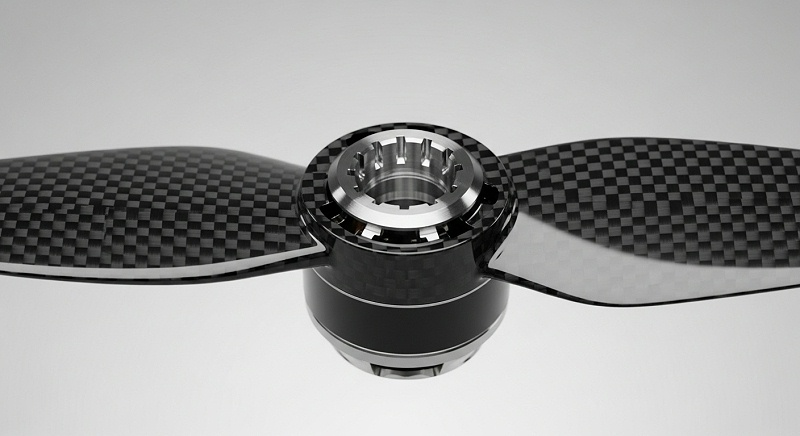
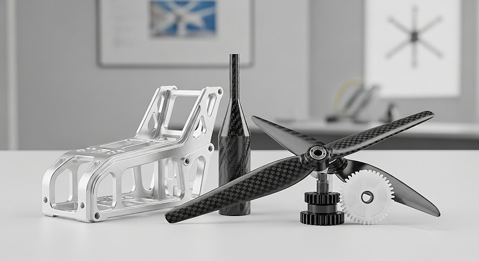
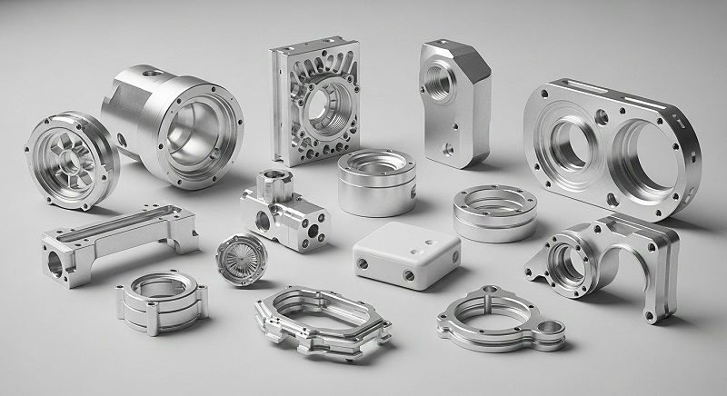

在无人机设计与制造领域，材料选择是决定其性能、耐久性和成本效益的核心要素。不恰当的材料可能导致结构失效、重量超标或制造成本飙升。对于高精度要求的无人机零件CNC加工而言，理解并掌握不同材料的特性及其加工要点至关重要。
本指南旨在为无人机研发工程师、结构设计师和生产制造工程师提供系统性的材料选择策略。我们将深入分析五种常用材料，探讨其在无人机应用中的优势与挑战，并提供实用的CNC加工建议，以期优化您的设计与制造流程。
航空铝合金因其卓越的强度重量比、良好的可加工性和成本效益，在无人机制造中占据主导地位。常用的牌号包括7075和6061。这些合金能够有效支撑无人机结构，同时最大程度地降低整体重量。

航空铝合金具有高比强度、优异的耐腐蚀性以及良好的导热性。其密度远低于钢，使得无人机在保证结构刚度的同时实现轻量化。此外，多种热处理状态可提供不同的机械性能，满足多样化的设计需求。
|
特性维度 |
7075铝合金（T6） | 6061铝合金（T6） |
|---|---|---|
|
**密度 (g/cm³)** |
2.81 | 2.70 |
|
**抗拉强度 (MPa)** |
572 | 310 |
|
**屈服强度 (MPa)** |
503 | 276 |
|
**主要优势** |
极高强度，优异的疲劳性能 | 良好可焊性，中等强度，耐腐蚀 |
|
**成本指数** |
中高 | 中低 |
航空铝合金的CNC加工性良好，但仍需注意切削参数的优化。高速切削和高进给率通常适用于此类材料，以减少刀具磨损并提高表面光洁度。充足的冷却液是确保切削区温度稳定、防止工件变形的关键。
切削时应选用锋利的刀具，前角和后角设计合理，以促进排屑。对于7075等高强度合金，切削力较大，需要选择刚性良好的机床和夹具，以避免加工振纹和尺寸偏差。
航空铝合金广泛应用于无人机的机身框架、起落架、电机座、云台支架及连接件。这些部件通常需要承受较大的载荷，并且对重量有严格限制。例如，大型测绘无人机的核心承力结构常采用7075铝合金，以确保飞行安全与任务稳定性。
碳纤维复合材料，特别是碳纤维增强聚合物（CFRP），是无人机轻量化设计的终极选择。其独特的层状结构赋予了材料无与伦比的强度和刚度重量比。
碳纤维复合材料的密度显著低于铝合金，但抗拉强度和刚度却高出数倍。它表现出优异的疲劳性能、耐腐蚀性和抗蠕变性。通过调整纤维排布方向，可以实现结构在特定方向上的性能优化。
| 特性维度 | 碳纤维复合材料（单向） |
航空铝合金（7075-T6） |
|---|---|---|
|
**密度 (g/cm³)** |
1.5 - 1.8 | 2.81 |
|
**比强度 (kN·m/kg)** |
超过150 | 约20 |
|
**比模量 (GN·m/kg)** |
超过100 | 约25 |
|
**主要优势** |
极高强度刚度、轻量化、耐疲劳 | 高强度、良好可加工性 |
|
**成本指数* |
高 | 中高 |
碳纤维复合材料的CNC加工极具挑战性。其高硬度和纤维磨损特性要求使用金刚石涂层刀具或硬质合金刀具。切削过程中会产生大量碳粉，需要有效的吸尘系统，并可能需要采取水冷措施以减少热量。
切削参数需谨慎选择，避免分层和毛刺。通常采用低进给、高速的加工策略。由于其各向异性，加工方向对最终零件的性能影响显著。伟创业CNC加工拥有处理此类挑战的专业经验，通过定制刀具和优化加工路径，确保碳纤维零件的完整性和精度。
碳纤维复合材料是无人机旋翼、机身外壳、支臂、起落架以及需要极致轻量化和高刚度的结构件的首选。例如，竞速无人机或长航时侦察无人机通常会广泛使用碳纤维部件，以提升飞行性能和续航能力。

钛合金，如Ti-6Al-4V，以其卓越的强度、低密度和出色的耐腐蚀性而闻名。它能在高温和腐蚀性环境下保持机械性能稳定，是无人机在恶劣工况下运行的理想材料。
钛合金具有与某些钢材媲美的强度，而密度仅为钢材的一半。其优异的耐腐蚀性使其在海洋环境或化学腐蚀性气体环境中表现出色。生物相容性也使其在一些特殊无人机应用中具有潜力。
|
特性维度 |
Ti-6Al-4V | 航空铝合金（7075-T6） | 高强度不锈钢（17-4PH H900） |
|---|---|---|---|
|
**密度 (g/cm³)** |
4.43 | 2.81 | 7.80 |
|
**抗拉强度 (MPa)** |
950 | 572 | 1170 |
|
**主要优势** |
高比强度、优异耐腐蚀、耐高温 | 极高强度、轻量化、可加工性好 | 高强度、耐磨损、耐腐蚀 |
|
**成本指数** |
极高 | 中高 | 高 |
钛合金的CNC加工难度较高，因其导热性差、弹性模量低和化学活性高。这导致切削区温度高、刀具磨损严重且易产生积屑瘤。加工时需采用低速、大进给、大背吃刀量，并使用高压冷却液。
刀具应选用高硬度、高韧性的硬质合金刀具，并定期检查刀具磨损情况。为了控制加工精度和表面质量，伟创业CNC加工在处理钛合金时，会采用优化后的切削液配方和多轴联动加工策略，确保复杂结构件的顺利成型。
钛合金适用于无人机中需要承受高载荷、耐高温或耐腐蚀的特定部件。例如，发动机安装座、燃油系统组件、高强度连接件或在特殊环境中工作的传感设备外壳。在一些军用或专业级无人机中，钛合金的应用更为普遍。
工程塑料在无人机领域提供了独特的性能组合，例如电绝缘性、轻量化和良好的摩擦学性能。PEEK（聚醚醚酮）和ABS（丙烯腈-丁二烯-苯乙烯）是两种常用选择。
PEEK具有卓越的机械性能、耐高温、耐化学腐蚀和耐磨性，且比重轻。ABS则具有良好的韧性、冲击强度和加工性，成本相对较低。这些塑料可以在特定功能区域替代金属，实现减重并集成功能。
|
特性维度 |
PEEK（未增强） | ABS（通用级） |
|---|---|---|
|
**密度 (g/cm³)** |
1.30 | 1.04 |
|
**抗拉强度 (MPa)** |
90 | 45 |
|
**耐温性** |
260°C以上 | 80-100°C |
|
**主要优势** |
高性能、耐高温、耐化学、轻量化 | 良好韧性、易加工、成本低、可着色 |
|
**成本指数** |
极高 | 低 |
工程塑料的CNC加工相对容易，但需注意材料热变形和熔融。PEEK需要较高的切削速度和锋利刀具，并注意冷却，以防止热量积聚导致变形。ABS加工时应避免过高的切削速度，防止熔融粘刀。
在加工塑料时，进给速度和切削深度应适当调整，以获得光滑的表面。夹具设计也需考虑塑料的柔软性，避免夹持变形。伟创业CNC加工凭借精确的温度控制和刀具选择，确保了工程塑料零件的尺寸精度和表面质量。
PEEK常用于无人机的齿轮、轴承、电连接器、传感器外壳以及需要耐高温和耐磨损的精密零件。ABS则适用于无人机非承重部件，如电池仓盖、天线罩、内部导流件、保护罩或原型件，以降低成本和缩短开发周期。
高强度不锈钢，如17-4PH（沉淀硬化不锈钢），在无人机中用于需要高强度、高硬度、耐磨损和一定耐腐蚀性的关键承载部件。尽管其密度较大，但在特定应用中不可替代。
17-4PH不锈钢在不同热处理状态下可达到极高的强度和硬度，同时保持良好的韧性。它具有优异的耐磨损性和中等程度的耐腐蚀性，优于许多合金钢。
| 特性维度 | 17-4PH不锈钢（H900） | 航空铝合金（7075-T6） |
|---|---|---|
|
**密度 (g/cm³)** |
7.80 | 2.81 |
|
**抗拉强度 (MPa)** |
1170 | 572 |
|
**硬度 (HB)** |
370-420 | 150-180 |
|
**主要优势** |
极高强度、高硬度、优异耐磨损、良好耐腐蚀 | 极高强度、轻量化、可加工性好 |
|
**成本指数** |
高 | 中高 |
高强度不锈钢的CNC加工难度较高，其高硬度导致刀具磨损快，切削力大。加工时需选用高强度、耐磨损的硬质合金刀具，并采用低切削速度、大进给量和充足的冷却液。
加工过程中，严格控制切削热，防止工件变形和表面硬化。伟创业CNC加工采用先进的五轴联动设备和专业的加工策略，成功为某军事侦察无人机制造了高精度不锈钢传动轴，确保了其在极端条件下的可靠运转。
高强度不锈钢适用于无人机的传动轴、紧固件、高强度轴承座、连接销、作动器部件以及需要承受剧烈冲击和磨损的机械结构件。在大型工业无人机或特殊用途无人机中，这些部件对安全性和可靠性要求极高。

选择无人机零件的最佳材料是一个多维度决策过程，需综合考虑性能要求、成本、加工可行性和环境因素。以下是关键决策流程：
1. **明确核心性能指标：** 首先定义无人机零件的优先级需求，例如极致轻量化、高强度、耐高温、耐腐蚀、电绝缘或特定的功能集成。
2. **分析工作环境：** 考虑无人机将在何种环境下运行（如高低温、潮湿、腐蚀性气体、振动），以评估材料的耐环境性能。
3. **评估加工复杂性与成本：** 权衡材料的CNC加工难度、刀具磨损、加工周期以及材料本身的采购成本。高性能材料通常意味着更高的加工成本。
4. **进行多目标优化：** 在性能、重量和成本之间寻找最佳平衡点。例如，对于非核心承力但需减重的部件，工程塑料可能是优于金属的选择。
5. **参考行业标准与案例：** 借鉴现有无人机产品和行业最佳实践，结合伟创业CNC加工等专业供应商的经验，获取材料选择的实证数据和建议。
无人机技术的快速发展对材料科学和制造工艺提出了更高要求。精准的材料选择不仅能显著提升无人机的性能（如续航、载重、速度），还能有效控制制造成本，缩短产品上市周期。
通过对航空铝合金、碳纤维复合材料、钛合金、工程塑料和高强度不锈钢这五种常用材料的深入理解，您将能够为不同无人机零件的CNC加工做出明智决策。伟创业CNC加工致力于提供专业的CNC加工服务，通过先进的设备和丰富的经验，将您的设计理念转化为高精度、高性能的无人机组件，助力您的无人机项目取得成功。

 全国服务热线
全国服务热线